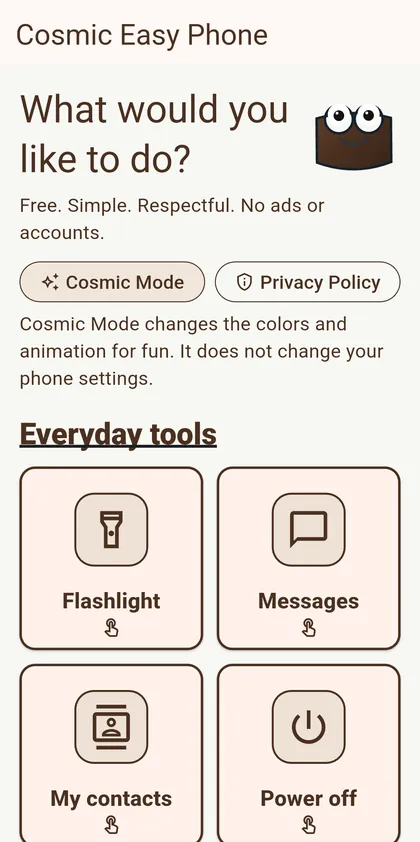
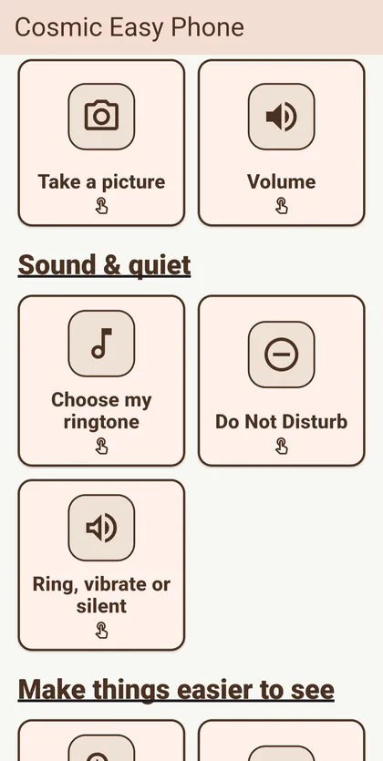
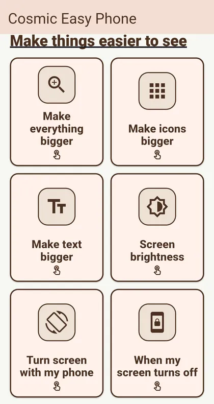
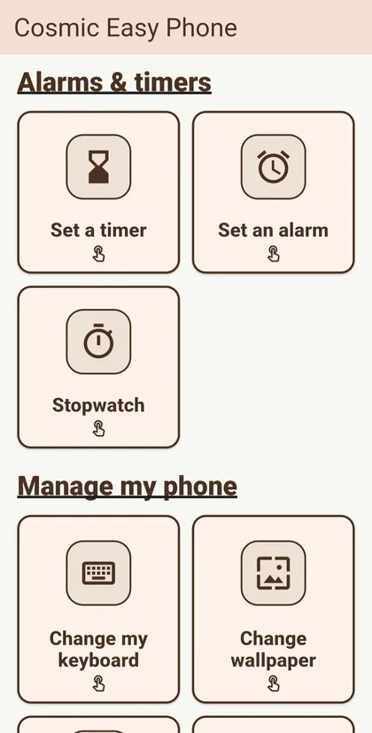
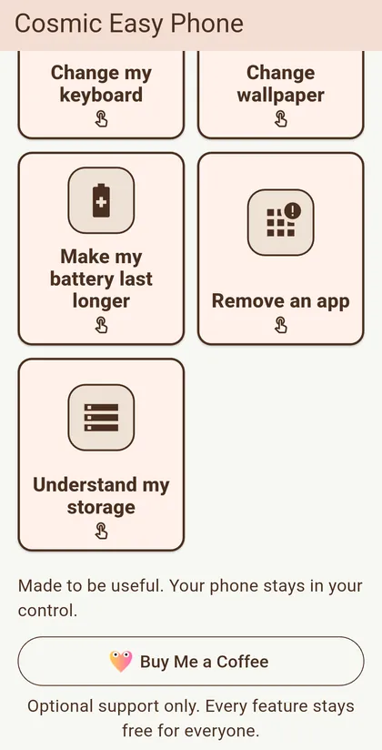

Android · APK download listed
Cosmic Easy Phone
Plain-language shortcuts and everyday tools for people who want their phone to make sense.
View APK download & installation Privacy & permissionsHelping Grandma actually work her phone.
- Readable categoriesCommon tools are grouped into five clear areas instead of buried in a maze.
- Explained handoffsWhen Android must open a system setting, the app explains why and how to get back.
- Useful daily toolsStopwatch, alarms and timers, flashlight, wallpaper, camera, and other practical actions.
- Honest resultsOpening a setting is never presented as proof that the setting changed.
Why this one? Built around readability and simpler controls rather than ever more settings.
A look inside Cosmic Easy Phone
Big, clear shortcuts for everyday phone tasks, without digging through settings menus.





Direct Android download
Get Cosmic Easy Phone
Free, always. No ads, subscriptions, or paid unlocks.
Only public releases published by Frogdadday appear here.
Published APK record · v1.0.3 · October 29, 2026
What changed: Repaired the adaptive launcher icon so the simple Frogdadday phone artwork stays centered and readable on modern Android launchers. The app's tools and respectful, ad-free behavior are unchanged.
- APK SHA-256
3cc39d296ad3725c1bd14f7c3203fafbfd22ce4a703118b0a953f7abd5cca4e8- Signing-certificate SHA-256 fingerprint
FA:78:E3:2C:F1:4F:B9:1F:7F:C3:24:5D:0A:14:F4:61:F8:F1:7D:8E:F7:F6:87:79:5B:02:4A:70:F8:06:A5:CF
These identifiers were extracted from the signed APK on October 29, 2026. Its signing certificate matches the previously published website APK, allowing direct-download users to update normally. Google Play uses its own app-signing process, so Play-installed and website-installed copies should be updated from the same source. These checks do not substitute for a security review.
Browse official Frogdadday GitHub Releases if the live download check does not load.
Installing an APK on Android
- Use the download button above when a public APK is available, or open the official Releases page linked above.
- Open the file. Android may ask permission to install apps from your browser or file manager.
- Review system warnings; proceed only when you trust the source. Turn off the extra installation permission afterward.
Website APKs do not receive Google Play automatic updates. Updating an installed app requires a compatible Android package and signing certificate.
This page checks whether a public APK exists; it does not independently verify the file's safety or signing certificate.
Help without hovering.
No ads, accounts, analytics, broad storage access, subscriptions, or paid features. Permissions are requested only when a chosen tool needs them.
Privacy & permissions
The policy explains when the camera and other chosen tools need Android access, what stays on your phone, and how outside apps are involved.
Read the full privacy policy